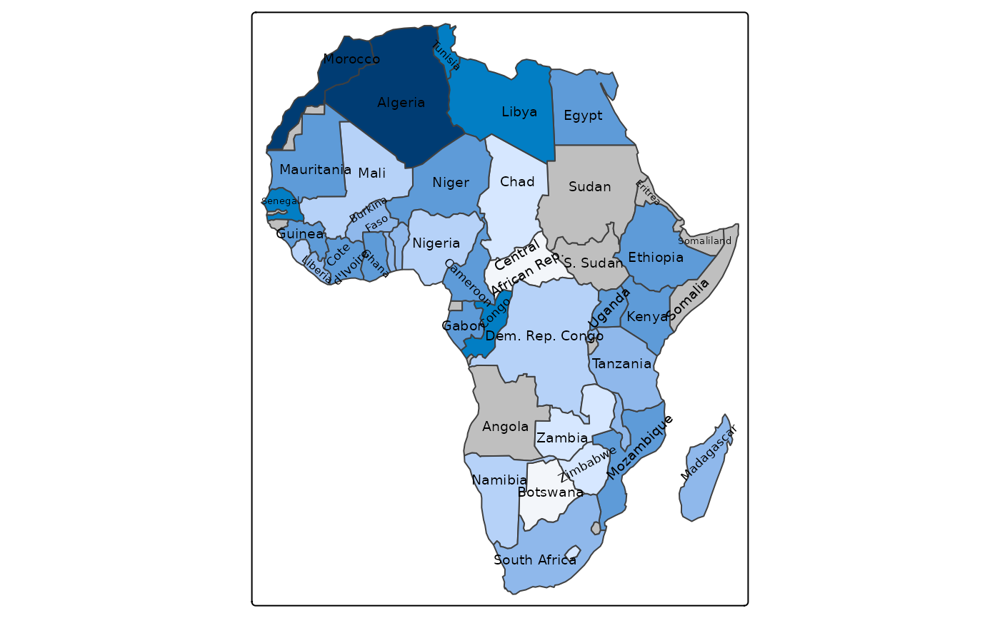
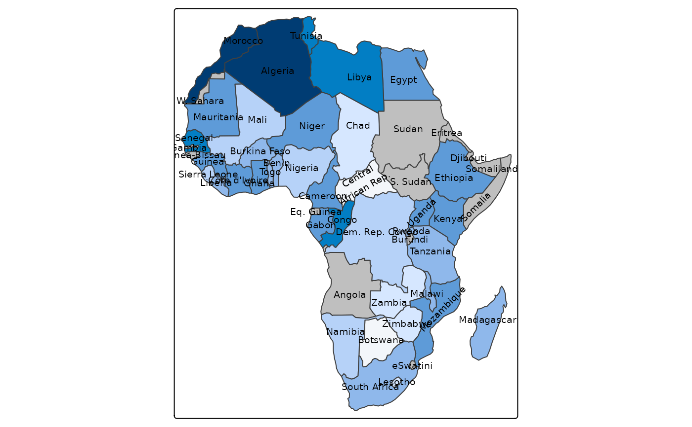
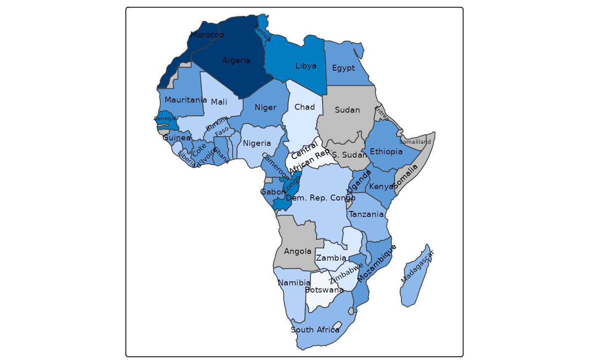

Specifies how tm_labels() places labels. Every label is first placed at its natural spot. For polygons this
is the center of the largest inscribed circle (the pole of inaccessibility), where the label is placed if it
fits inside the polygon. For points, these are the eight positions around the point, in the order of
preference of Imhof (top right, top left, bottom right, bottom left, right, left, top, bottom), where the label
is placed if it does not overlap other labels or points. If the label does not fit, the steps of fallback are
tried in the given order. Labels are placed in the order of their priority (see tm_labels()).
Usage
tm_placement(
fallback = c("wrap", "rotate", "shrink", "move", "drop"),
rotate.max = 45,
shrink.min = 0.7,
move = "free",
move.max = 0.25,
gap = 0.4,
method = "greedy"
)Arguments
- fallback
ordered character vector of steps that are tried when a label does not fit. See details.
- rotate.max
maximum absolute rotation angle (degrees) of the
"rotate"step.- shrink.min
smallest font scale factor of the
"shrink"step.- move
where labels are moved to by the
"move"step:"free"(the nearest free space around the label's feature),"column"(stacked in a column at the left or right, whichever side of the map is nearest), or a side:"left","right"(stacked in a column),"top", or"bottom"(in a row). Labels that do not fit in a column or row are placed as with"free".- move.max
maximum fraction of labels that are moved by the
"move"step. If more labels do not fit inside their polygons (as in maps with many small polygons), no labels are moved, since the many leader lines would clutter the map. Set it to 1 to move labels regardless.- gap
distance between points and their labels, in line heights. Points only.
- method
method to place point labels:
"greedy"(default) places the labels in the order of their priority at the first position that is free;"SANN"(simulated annealing) and"GA"(genetic algorithm) use the optimization ofcar::pointLabel()(as in tmap 4.0-4.4), in which casefallbackis not used for points.
Details
The steps of fallback:
"abbreviate": use the short text (theshortargument oftm_labels()), if specified."wrap": break the text into two or three lines at spaces."rotate": rotate the text along the main axis of the polygon (at mostrotate.maxdegrees). Polygons only."shrink": decrease the font size down toshrink.mintimes the original size."move": place the label outside its polygon, in free space (not on top of polygons or other labels), with a leader line (seetm_leader()). Leader lines do not cross each other or other labels. Withmove = "free", labels are moved at most 15 label heights away; labels that do not fit there are tried again, after all other labels have been placed, at most 25 label heights away. Steps after"move"are only tried for labels that cannot be moved."drop"or"overlap": the last step, what to do with labels that still do not fit: remove them ("drop") or keep them at their natural spot with the original size ("overlap"). If neither is specified,"overlap"is used.
Steps are cumulative: e.g. with c("wrap", "rotate"), a rotated label is also tried with wrapped text.
Instead of a tm_placement() object, the placement argument of opt_tm_labels() also accepts a preset:
"auto" (the default, tm_placement()), "inside" (labels never leave their polygon),
"callout" (labels that do not fit are moved to a column next to the map), and "none"
(labels are placed at the natural spot, as with tm_text()).
In plot mode, all steps are applied. In view mode, labels are placed at their natural spot. Note that moved labels
need free space within the map frame; use the inner.margins of tm_layout() to create space if needed.
See also
tm_labels(), vignette: Label placement
Examples
Africa = World[World$continent == "Africa", ]
# default: labels are wrapped, rotated, or shrunk to fit inside the countries;
# labels that still do not fit are moved outside with leader lines
tm_shape(Africa, crs = "+proj=robin") +
tm_polygons("HPI", fill.legend = tm_legend_hide()) +
tm_labels("name", size = 0.6)
#> [labels] 25% of the labels do not fit inside their polygons, which is too many
#> to move outside (see `move.max` of `tm_placement()`)
#> This message is displayed once every 8 hours.

# never move or shrink labels, and keep the labels that do not fit
tm_shape(Africa, crs = "+proj=robin") +
tm_polygons("HPI", fill.legend = tm_legend_hide()) +
tm_labels("name", size = 0.6,
options = opt_tm_labels(placement = tm_placement(fallback = c("wrap", "rotate", "overlap"))))

# moved labels in a column, with elbow-shaped gray leader lines
tm_shape(Africa, crs = "+proj=robin") +
tm_polygons("HPI", fill.legend = tm_legend_hide()) +
tm_labels("name", size = 0.6,
options = opt_tm_labels(placement = "callout",
leader = tm_leader(col = "gray40", type = "elbow"))) +
tm_layout(inner.margins = c(0.02, 0.1, 0.02, 0.1))
